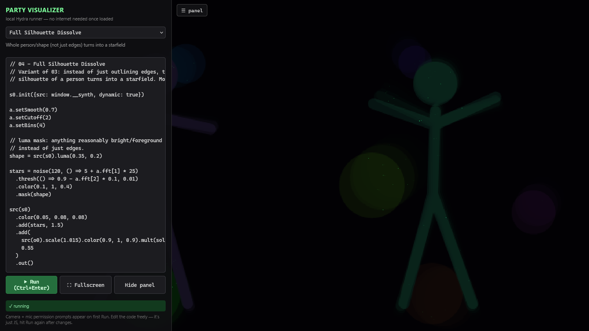
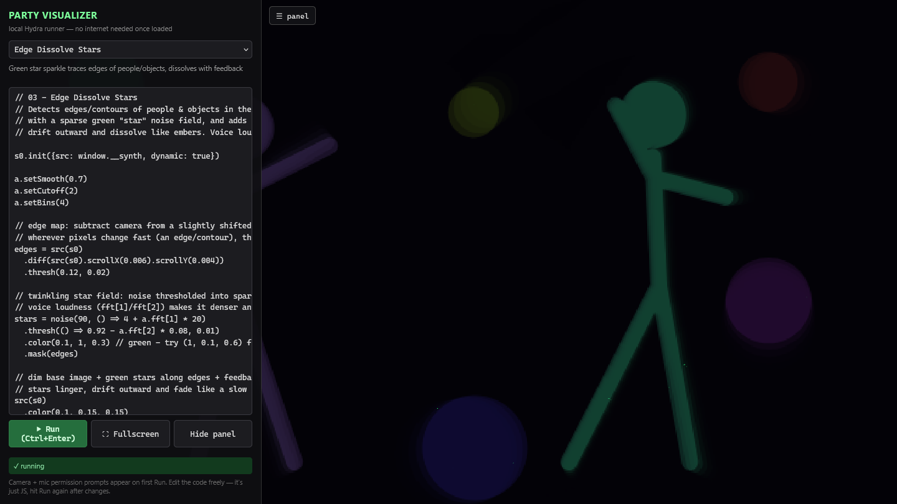
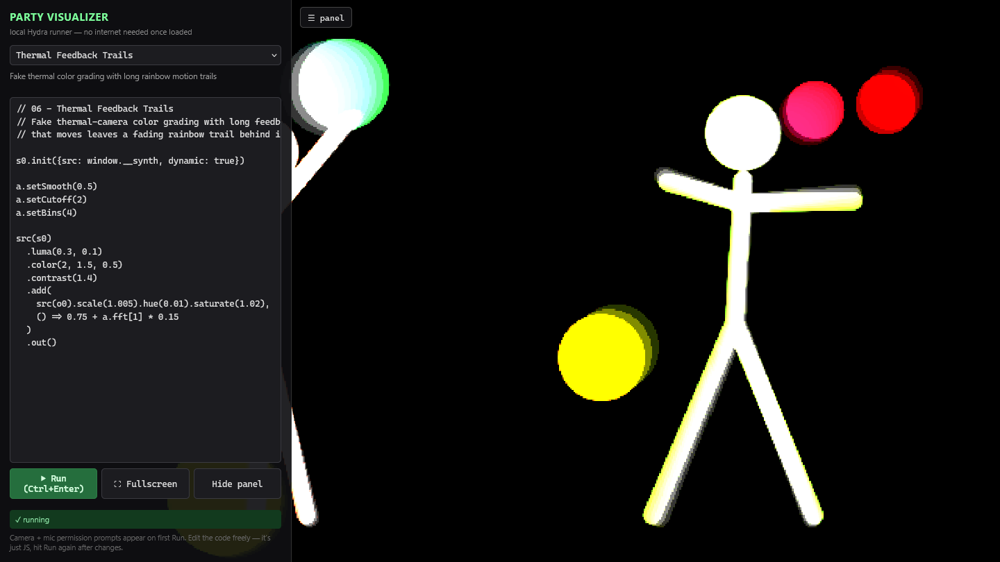

Point a webcam and a microphone at a room and get live, sound-reactive visuals for the projector. It runs from one folder, and it still works when the venue wifi doesn't.

Real screenshot of the app. The camera is replaced by a synthetic animated source so no real person is shown.
Silhouettes dissolve into stars, kaleidoscopes pulse with the bass, motion leaves rainbow trails. Voice and music drive the numbers.
The Hydra engine is bundled and the server is ~40 lines of plain Node. Clone it, run it, no internet needed at the venue.
Every effect is a short, commented Hydra sketch. Change a number in the side panel, hit Ctrl+Enter, see it instantly.


# 1. get it git clone https://github.com/itstomekk/party-visualizer.git cd party-visualizer # 2. run it (Node.js, nothing to install) node server.js # 3. open http://localhost:8080, press Run, allow camera + mic